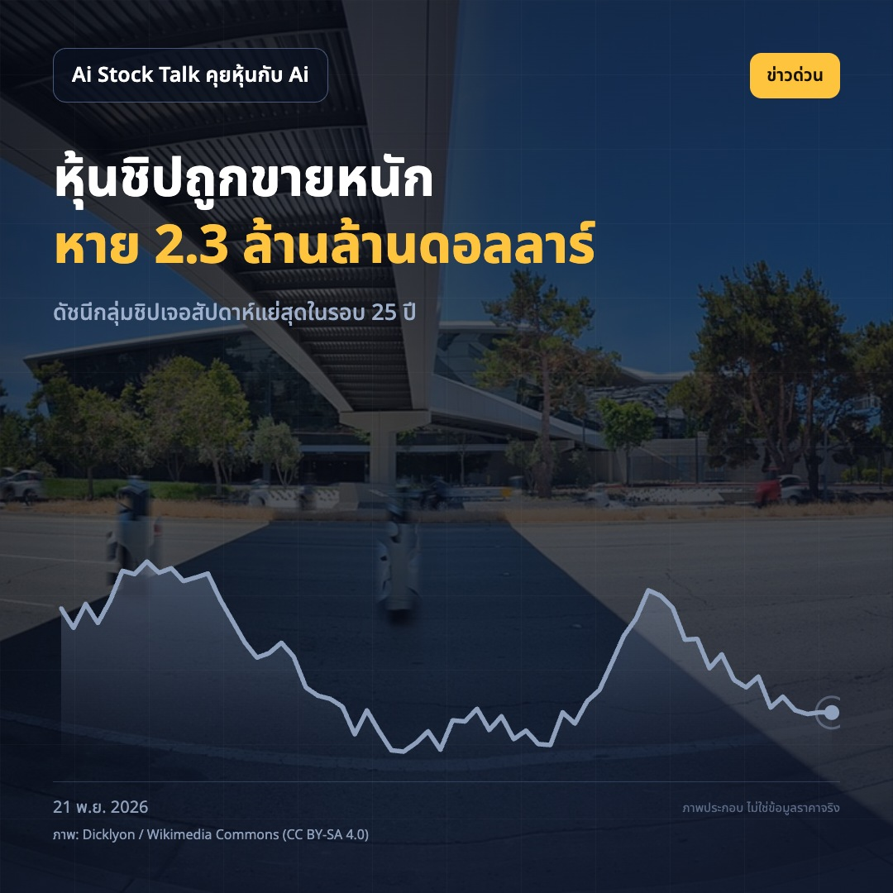
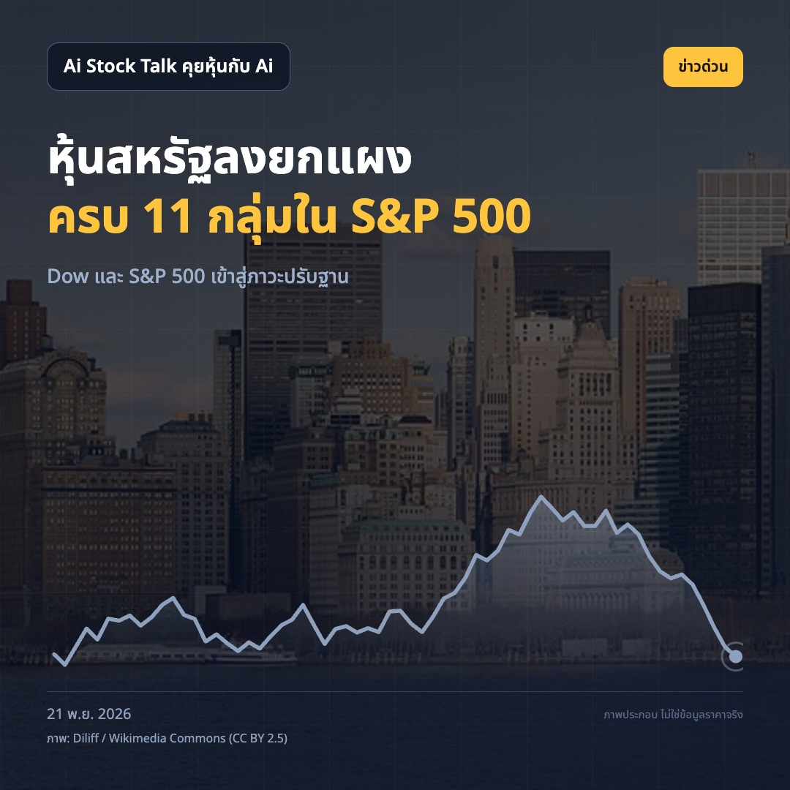
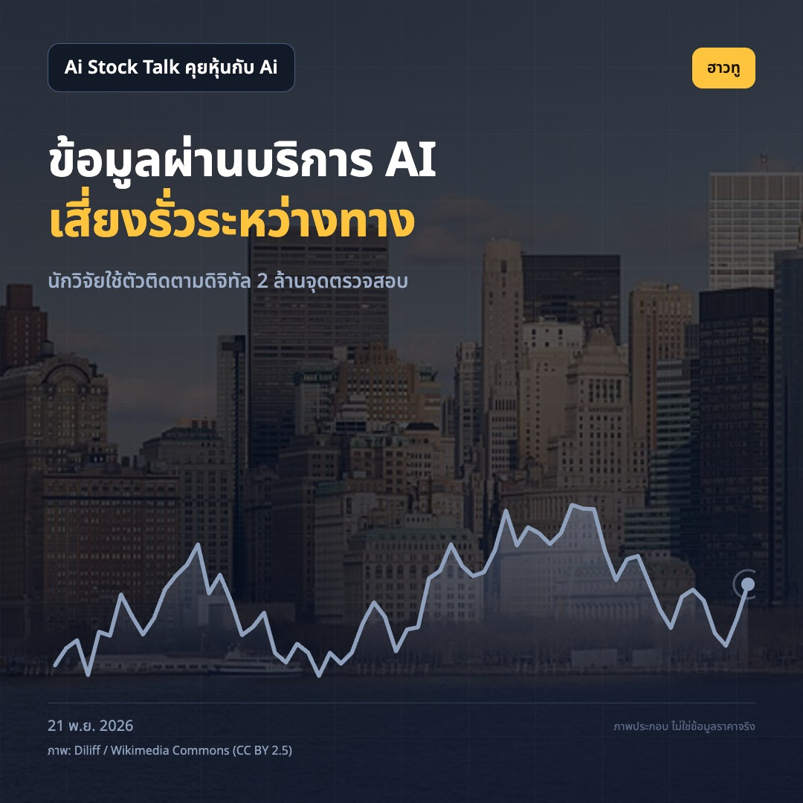

1. หุ้นชิปหาย 2.3 ล้านล้านดอลลาร์ในสัปดาห์เดียว

หุ้นชิปหาย 2.3 ล้านล้านดอลลาร์ในสัปดาห์เดียว ดัชนีกลุ่มเซมิคอนดักเตอร์หลักทำผลงานรายสัปดาห์แย่ที่สุดในรอบ 25 ปี ขณะที่แรงขายกดดันหุ้นที่เกี่ยวข้องกับ AI ตัวเลขมูลค่าที่หายไปสะท้อนว่าแรงขายครั้งนี้กระทบหุ้นชิปทั้งกลุ่ม ไม่ได้จำกัดอยู่ที่บริษัทใดบริษัทหนึ่ง ทำไมต้องสน: คนที่ถือหุ้นชิปหลายตัว หรือถือกองทุนเทคที่ลงทุนในหุ้นชิป อาจได้รับผลจากแรงขายเดียวกันพร้อมกัน จึงควรดูน้ำหนักหุ้นกลุ่มนี้ในพอร์ต ตอนนี้พอร์ตของคุณพึ่งพาหุ้นชิปมากแค่ไหน? ที่มา: https://www.marketwatch.com/story/chip-stocks-see-2-3-trillion-weekly-wipeout-as-panic-grips-the-ai-trade-371f2f03?mod=mw_rss_topstories
หุ้นชิป #หุ้นAI #ลงทุนหุ้นสหรัฐ
ภาพ: Dicklyon / Wikimedia Commons (CC BY-SA 4.0)
2. Nvidia ร่วง 14% หลังเจอแรงขายต่อเนื่อง

Nvidia ร่วง 14% สถิติขาลงรายสัปดาห์ยาวสุดนับจากปี 2008 หุ้น Nvidia ปิดสัปดาห์ที่ร่วงต่อเนื่องยาวนานที่สุดนับจากวิกฤตการเงินปี 2008 บริษัทที่เคยมีมูลค่าสูงสุดในโลก ตอนนี้อยู่อันดับ 4 รองจาก Apple, Microsoft และ Alphabet อีกแหล่งข่าวระบุว่ามูลค่าตลาด Nvidia หายไป 1.16 ล้านล้านดอลลาร์ในช่วง 7 วันซื้อขายที่ผ่านมา ทำไมต้องสน: Nvidia เป็นหุ้นที่นักลงทุนจำนวนมากใช้ติดตามธีม AI เมื่อหุ้นตัวนี้ถูกขายหนัก คนที่ถือหุ้นหรือกองทุนที่มี Nvidia ควรตรวจดูว่าน้ำหนักในพอร์ตเปลี่ยนไปอย่างไร คุณมองแรงขายครั้งนี้เป็นเหตุให้ทบทวนสัดส่วนหุ้น AI ในพอร์ตไหม? ที่มา: https://www.cnbc.com/2026/11/20/nvidias-7-week-losing-streak-is-longest-since-2008-financial-crisis.html https://www.marketwatch.com/story/nvidias-stock-heads-for-a-stretch-of-weekly-losses-unseen-since-2008-91aba9a6?mod=mw_rss_topstories
Nvidia #หุ้นAI #หุ้นสหรัฐ
ภาพ: Dicklyon / Wikimedia Commons (CC BY-SA 4.0)
3. แรงขายหุ้นสหรัฐลามครบ 11 กลุ่มใน S&P 500

หุ้นทั้ง 11 กลุ่มใน S&P 500 ลงเกิน 1% ในสัปดาห์เดียว Dow และ S&P 500 เข้าสู่ภาวะปรับฐาน ส่วน Nasdaq เจอสัปดาห์ที่แย่ที่สุดนับจากปี 2020 หุ้นทั้ง 11 กลุ่มของ S&P 500 ปิดสัปดาห์ลดลงมากกว่า 1% พร้อมกัน เป็นครั้งแรกนับจากเดือนเมษายน 2025 อีกข้อมูลระบุว่า 94% ของหุ้นใน S&P 500 ลดลงในสัปดาห์นี้ ทำไมต้องสน: คนไทยที่ลงทุนผ่านกองทุนหุ้นสหรัฐวงกว้างอาจเจอแรงขายกระจายหลายกลุ่ม แม้ไม่ได้เลือกถือหุ้น AI หรือหุ้นเทคโดยตรง คุณดูความเสี่ยงของกองทุนสหรัฐในพอร์ตจากอะไรเป็นหลัก? ที่มา: https://www.marketwatch.com/story/dow-s-p-500-enter-correction-as-nasdaq-suffers-worst-week-since-2020-bd74dadf?mod=mw_rss_topstories https://www.marketwatch.com/story/these-stocks-were-crushed-the-most-this-week-as-the-tech-wreck-accelerated-8d6f7323?mod=mw_rss_topstories
หุ้นสหรัฐ #ตลาดหุ้น #พอร์ตลงทุน
ภาพ: Diliff / Wikimedia Commons (CC BY 2.5)
4. Anthropic ร่วงเกือบ 9% หลังเข้าตลาด

Anthropic ร่วงเกือบ 9% ในวันซื้อขายเต็มวันแรก หุ้นบริษัท AI รายนี้ถูกขายท่ามกลางแรงกดดันต่อหุ้นเทค และปิดที่ 97.17 ดอลลาร์ หุ้นเปิดซื้อขายที่ 111.50 ดอลลาร์เมื่อวันพฤหัสบดี ก่อนราคาลดลง แต่ราคาปิดล่าสุดยังสูงกว่าราคา IPO ที่ 83 ดอลลาร์อยู่ 17% อีกแหล่งข่าวระบุว่าการที่หุ้นรักษาราคาเปิดไว้ไม่ได้ถูกมองว่าเป็นสัญญาณที่ไม่ดีต่อหุ้นเทคตัวอื่น ทำไมต้องสน: หุ้น AI ที่เพิ่งเข้าตลาดอาจมีราคาผันผวนมาก แม้ยังซื้อขายเหนือราคา IPO คนที่กำลังมองหุ้นกลุ่มนี้ควรแยกราคาเปิดออกจากราคาที่หุ้นยืนได้หลังเริ่มซื้อขาย คุณให้น้ำหนักกับราคา IPO หรือราคาหลังเข้าตลาดมากกว่ากัน? ที่มา: https://www.cnbc.com/2026/11/20/anthropic-stock-ai-amd-nvidia.html https://www.marketwatch.com/story/anthropics-stock-slides-closer-to-ipo-price-and-drags-down-the-ai-trade-cc43a0c4?mod=mw_rss_topstories
Anthropic #หุ้นAI #IPO
ภาพ: ESO/P. Horálek / Wikimedia Commons (CC BY 4.0)
5. ข่าวดีลซื้อกิจการดัน Zscaler พุ่ง 18%

Zscaler พุ่ง 18% หลังมีข่าว CrowdStrike คุยซื้อกิจการ รายงานระบุว่า CrowdStrike กำลังเจรจาเพื่อซื้อบริษัทความปลอดภัยไซเบอร์ Zscaler หุ้น Zscaler ตอบรับข่าวด้วยการปรับขึ้น 18% ขณะที่บริษัทในธุรกิจความปลอดภัยไซเบอร์กำลังมองหาการซื้อกิจการในยุค AI ข้อมูลที่มีระบุเพียงการเจรจา ยังไม่ได้ระบุว่าทั้งสองบริษัทบรรลุข้อตกลงแล้ว ทำไมต้องสน: หุ้นที่ขึ้นจากข่าวซื้อกิจการผูกอยู่กับผลของการเจรจา นักลงทุนที่ถือหุ้นความปลอดภัยไซเบอร์จึงควรติดตามว่าข่าวคืบหน้าไปถึงขั้นใด ก่อนนำราคาหุ้นที่พุ่งขึ้นไปประเมินพอร์ต คุณมองข่าวเจรจาซื้อกิจการต่างจากดีลที่ประกาศแล้วอย่างไร? ที่มา: https://www.cnbc.com/2026/11/20/zscaler-crowdstrike-deal.html
Zscaler #CrowdStrike #หุ้นไซเบอร์
ภาพ: Diliff / Wikimedia Commons (CC BY 2.5)
6. ทดลองติดตามข้อมูล 2 ล้านจุด พบความเสี่ยงรั่วในบริการ AI

ติดตามข้อมูล 2 ล้านจุด พบความเสี่ยงรั่วผ่านบริการ AI นักวิจัยฝังตัวติดตามดิจิทัล 2 ล้านจุดในคำขอที่ส่งผ่านเครือข่ายบริการ AI เพื่อตรวจว่าข้อมูลอ่อนไหวเดินทางไปไหน การทดลองพบการเปิดเผยข้อมูลที่มีความอ่อนไหวในเครือข่ายบริการเหล่านี้ แอป AI จำนวนมากใช้ตัวกลางรับคำขอจากผู้ใช้ แล้วส่งต่อไปยังผู้ให้บริการโมเดลอีกทอดหนึ่ง ทำไมต้องสน: หากใช้ AI กับข้อมูลลูกค้าหรือเอกสารงาน ความเสี่ยงอาจอยู่ในบริการระหว่างทางด้วย ผู้ใช้และองค์กรจึงควรรู้ว่าคำขอถูกส่งผ่านบริการใดบ้าง ก่อนใส่ข้อมูลสำคัญในแอป AI คุณตรวจสอบเส้นทางข้อมูลหรือไม่? ที่มา: https://arstechnica.com/security/2026/11/a-leaky-ai-supply-chain-is-exposing-secret-user-data-at-an-alarming-rate/
ความปลอดภัยข้อมูล #AI #ข้อมูลส่วนตัว
ภาพ: Diliff / Wikimedia Commons (CC BY 2.5)